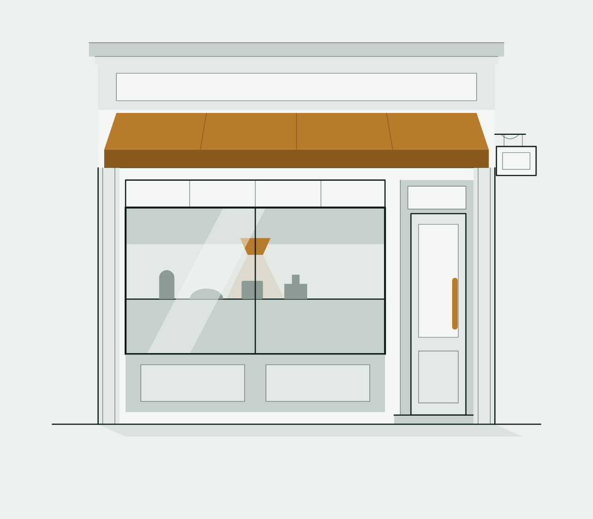

Branche abandonnée · conservée pour trace
Une devanture dessinée à la main, en SVG, avec une hiérarchie de traits et une échelle tonale à quatre valeurs. Elle vient d'une session parallèle qui cherchait à sortir la page du « clipart », sans savoir que le style maison duotone avait déjà été arrêté ailleurs.
tools/beauty-loop et n'entre pas en concurrence avec le
style maison fixé dans vision/illustration-style.md (duotone,
restaurant 7,5 / salon 7,4). Elle appartient à la branche « détail / réalisme »
que ce panneau plafonne à 6,0 — et elle est hors palette : gris neutres et laiton
au lieu de la rampe teal. Elle est publiée uniquement pour garder la trace
de la méthode, en vue de tâches futures.

Autonome : styles embarqués, aucune dépendance, s'ouvre seul dans un navigateur. Dans la page, les tons viennent des jetons et suivent le thème clair/sombre.
Ce qui sépare le dessin du clipart : trois poids, jamais un seul trait uniforme.
vector-effect:non-scaling-stroke garde l'épaisseur constante quelle que
soit la taille d'affichage.
.w1 { stroke-width:.7; opacity:.5 } /* détail intérieur : moulures, feuillures */
.w2 { stroke-width:1.3 } /* structure : dormants, seuil, sol */
.w3 { stroke-width:2.1 } /* contour porteur : la baie vitrée */
Deux aplats ne suffisent pas : il faut que la vitre, le plafond en retrait, le comptoir et le soubassement se séparent par le ton, pas par le contour.
| Jeton | Clair | Sombre | Rôle |
|---|---|---|---|
--il-t1 | #F4F7F5 | #223330 | façade, imposte |
--il-t2 | #E3E9E5 | #2C3F3A | vitre, panneaux |
--il-t3 | #C6D1CB | #3C524C | retrait, comptoir, soubassement |
--il-t4 | #8C9C95 | #5E756D | silhouettes en vitrine |
--il-ad | #8A5A1C | #A8763A | dessous d'auvent (accent assombri) |
a) Une échelle en pourcentage n'est pas symétrique.
Dériver les tons par color-mix(in oklab, encre N%, papier) marche en
clair et s'effondre en sombre : 4 % d'encre claire sur papier sombre donne #1A2825
contre un fond #12201D — la devanture devient un bloc noir. En sombre, les tons
doivent monter vers la lumière. D'où des valeurs écrites par thème.
b) color-mix sur un fill peut tout noircir.
Une propriété personnalisée est un flux de jetons : sur un navigateur sans
color-mix(in oklab, …), --t1 reste « définie » mais invalide,
donc fill:var(--t1) est invalide à la valeur calculée et retombe sur son
initiale — noir. Aucun var(--t1, repli) ne rattrape ça,
puisque la variable est définie. C'est pourquoi les couleurs sont écrites.
Le vocabulaire fait la crédibilité. De haut en bas : corniche à moulures superposées · bandeau d'enseigne à panneau en retrait · auvent en trapèze (plus large en bas, donc il avance) avec nervures et lambrequin assombri · imposte à petits bois · baie vitrée avec plafond en retrait, suspension et halo, comptoir, marchandise en silhouette et un large reflet oblique · soubassement à deux panneaux · entrée en retrait avec feuillure, imposte, vantail à deux panneaux et vraie barre de tirage · pilastres de part et d'autre · ombre portée pour le poids.
Dans la page, le SVG ne porte aucune couleur : il porte des classes, et le contexte
fournit les jetons. Réutiliser la pièce ailleurs = fournir .il-scene.
.il-scene { --t1:var(--il-t1); --t2:var(--il-t2); --t3:var(--il-t3);
--t4:var(--il-t4); --ad:var(--il-ad); }
.il-scene .f1{fill:var(--t1)} … .f4{fill:var(--t4)}
.il-scene .fa{fill:var(--accent)} .fad{fill:var(--ad)}
Aucun outil particulier — Chrome sans interface suffit :
google-chrome --headless=new --disable-gpu --hide-scrollbars \ --window-size=640,560 --force-device-scale-factor=2 \ --screenshot=devanture.png file://…/devanture.svg
page/ — la page complète telle que dessinée devanture.svg — la pièce seule
La page embarque ses propres assets/ : elle est figée et ne bougera pas
quand le site évoluera. Elle contient aussi deux autres essais de la même session —
une frise de devantures sous le pli, et des vitres calmes à petits bois en galerie
(à la place d'icônes, qui lisaient comme du remplissage).
Session parallèle du 21 juillet 2026. Conservé comme trace de méthode, pas comme
proposition. Le style maison reste le duotone décrit dans
vision/illustration-style.md.
{kind=link}